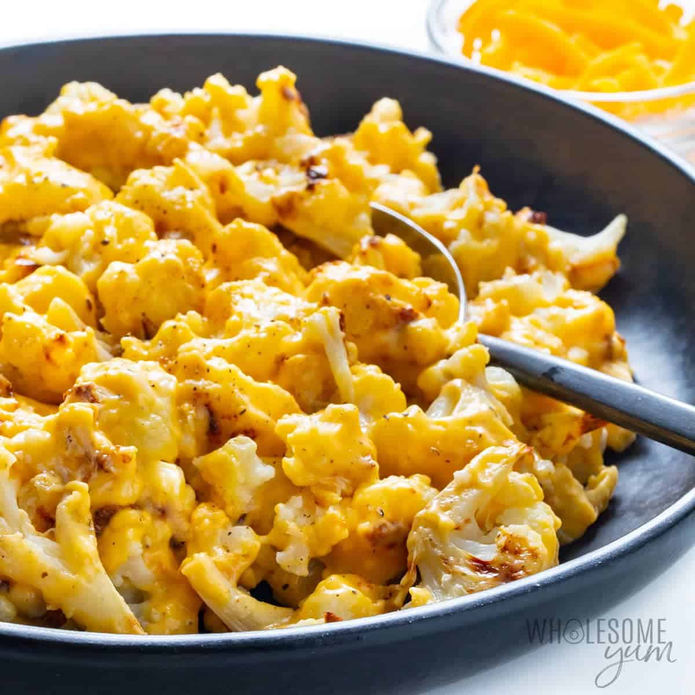

Back to Homepage
Cauliflower Mac and Cheese

Cauliflower mac and cheese is a pretty good dish. It's healthier than regular mac and cheese, and is almost as good. My girlfriend is standing over my shoulder breathing down my neck as I type this. Send help. She's cooking this tonight and I'm devastatingly excited.
Ingredients:
- 1 large head of fresh cauliflower - Fresh is best for this recipe. You can use frozen, making sure some of the florets are small. Also, be sure to drain them well. Frozen tends to hold more water and will make the sauce runny.
- 1 cup heavy cream and 2 ounces of cream cheese - These make it creamy, smooth, and rich.
- 2 cups sharp cheddar - Fresh shredded. Pre-shredded cheese has cellulose to prevent it from clumping.
- 2 teaspoons dijon mustard - Adds a little bright and tangy flavor.
- 1/8 teaspoon garlic powder
- 1/2 teaspoon kosher salt
- 1/4 teaspoon black pepper
How to make Cauliflower Mac:
Cauliflower
- Bring a large pot of salted water to a boil.
- Chop the cauliflower into bite-size pieces, boil them for about 5 minutes.
- Drain very well on paper towels, place back into the hot pot. This will help dry up some of the moisture remaining.
- Place the cauliflower in a baking dish.
Cheese Sauce
- Bring the heavy cream to a simmer in a small saucepan over medium heat.
- Whisk in the cream cheese and mustard until smooth.
- Stir in 1.5 cups of the sharp cheddar cheese along with salt, pepper, and garlic powder. Whisk until the cheese just melts; around 1-2 minutes.
- Add salt and pepper to taste if needed.
Bring it all together:
- Pour cheese sauce evenly over the cauliflower. Sprinkle with shredded cheddar cheese and bake for about 15 min.
- Let cool for 5-10 min.
- Enjoy!